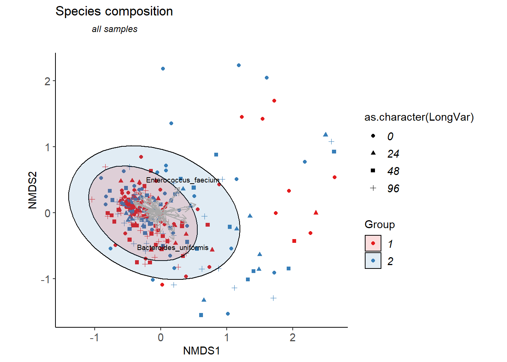

Last updated: 2022-01-20
Checks: 6 1
Knit directory: advanz4/
This reproducible R Markdown analysis was created with workflowr (version 1.6.2). The Checks tab describes the reproducibility checks that were applied when the results were created. The Past versions tab lists the development history.
The R Markdown file has unstaged changes. To know which version of the R Markdown file created these results, you’ll want to first commit it to the Git repo. If you’re still working on the analysis, you can ignore this warning. When you’re finished, you can run wflow_publish to commit the R Markdown file and build the HTML.
Great job! The global environment was empty. Objects defined in the global environment can affect the analysis in your R Markdown file in unknown ways. For reproduciblity it’s best to always run the code in an empty environment.
The command set.seed(20211203) was run prior to running the code in the R Markdown file. Setting a seed ensures that any results that rely on randomness, e.g. subsampling or permutations, are reproducible.
Great job! Recording the operating system, R version, and package versions is critical for reproducibility.
Nice! There were no cached chunks for this analysis, so you can be confident that you successfully produced the results during this run.
Great job! Using relative paths to the files within your workflowr project makes it easier to run your code on other machines.
Great! You are using Git for version control. Tracking code development and connecting the code version to the results is critical for reproducibility.
The results in this page were generated with repository version 3643e04. See the Past versions tab to see a history of the changes made to the R Markdown and HTML files.
Note that you need to be careful to ensure that all relevant files for the analysis have been committed to Git prior to generating the results (you can use wflow_publish or wflow_git_commit). workflowr only checks the R Markdown file, but you know if there are other scripts or data files that it depends on. Below is the status of the Git repository when the results were generated:
Ignored files:
Ignored: .Rhistory
Ignored: .Rproj.user/
Ignored: data/mre.rds
Unstaged changes:
Modified: advanz4.Rproj
Modified: analysis/NMDS.Rmd
Note that any generated files, e.g. HTML, png, CSS, etc., are not included in this status report because it is ok for generated content to have uncommitted changes.
These are the previous versions of the repository in which changes were made to the R Markdown (analysis/NMDS.Rmd) and HTML (docs/NMDS.html) files. If you’ve configured a remote Git repository (see ?wflow_git_remote), click on the hyperlinks in the table below to view the files as they were in that past version.
| File | Version | Author | Date | Message |
|---|---|---|---|---|
| Rmd | 3643e04 | cblazquez-irsi | 2022-01-19 | Rewrote Biplot generation in a tidyverse manner |
This is an R Markdown document. Markdown is a simple formatting syntax for authoring HTML, PDF, and MS Word documents. For more details on using R Markdown see http://rmarkdown.rstudio.com.
When you click the Knit button a document will be generated that includes both content as well as the output of any embedded R code chunks within the document. You can embed an R code chunk like this:
suggested package selbal vsuggested package DataExplorer vsuggested package lme4 vsuggested package merTools vYou can also embed plots, for example:
myPath<-here::here()
setwd(myPath)
mymre<-readRDS("data/mre.rds")Warning: namespace 'ggside' is not available and has been replaced
by .GlobalEnv when processing object '<unknown>'metadata <- metar::get_metadata(mymre)@metadata_df
myphyloseq<-mymre@taxa@metaphlan@phyloseq
CategoricalVariablesDF <- get_metadata(mymre)@categorical_vals
NumericalVariablesDF <- get_metadata(mymre)@numeric_vals
LongitudinalVariablesDF <- get_metadata(mymre)@longitudinal_valsgetAbundances<-function(phyloseq, level){
collapsedPhyloseq<- phyloseq::tax_glom(phyloseq, level)
OtuTable<- phyloseq::otu_table(collapsedPhyloseq) %>%
magrittr::set_rownames(as.character(phyloseq::tax_table(collapsedPhyloseq)[,level])) %>%
as.data.frame()
return(OtuTable)
}
myAbundanceDF<- getAbundances(myphyloseq, "Species")
Top50<- myAbundanceDF %>%
mutate(sum=rowSums(.)) %>%
arrange(desc(sum)) %>%
dplyr::slice(1:50) %>%
rownames()
myNMDS <- myAbundanceDF %>%
# dplyr::filter(row.names(.) %in% Top50) %>%
t() %>%
as.data.frame() %>%
metaMDS(.,distance="bray",trymax=100,
k = nrow(unique(metadata[,CategoricalVariablesDF$CategoricalVariable[1]]))) %>%
pluck("points") %>%
as.data.frame() Square root transformation
Wisconsin double standardization
Run 0 stress 0.1724211
Run 1 stress 0.1727506
... Procrustes: rmse 0.008020794 max resid 0.09660984
Run 2 stress 0.175547
Run 3 stress 0.1770523
Run 4 stress 0.1742376
Run 5 stress 0.1839672
Run 6 stress 0.1785978
Run 7 stress 0.1784786
Run 8 stress 0.1754067
Run 9 stress 0.1832022
Run 10 stress 0.1737863
Run 11 stress 0.1829618
Run 12 stress 0.1736877
Run 13 stress 0.1732637
Run 14 stress 0.1806222
Run 15 stress 0.1777061
Run 16 stress 0.1844301
Run 17 stress 0.1810641
Run 18 stress 0.1826686
Run 19 stress 0.1771014
Run 20 stress 0.1737674
Run 21 stress 0.1781841
Run 22 stress 0.1775179
Run 23 stress 0.184522
Run 24 stress 0.175341
Run 25 stress 0.1765879
Run 26 stress 0.1756514
Run 27 stress 0.1782388
Run 28 stress 0.1761966
Run 29 stress 0.1781504
Run 30 stress 0.1909787
Run 31 stress 0.1717816
... New best solution
... Procrustes: rmse 0.01025499 max resid 0.09855546
Run 32 stress 0.1750336
Run 33 stress 0.1721063
... Procrustes: rmse 0.0208961 max resid 0.291216
Run 34 stress 0.1740108
Run 35 stress 0.177154
Run 36 stress 0.1869996
Run 37 stress 0.1730058
Run 38 stress 0.1778511
Run 39 stress 0.1774592
Run 40 stress 0.175148
Run 41 stress 0.1759703
Run 42 stress 0.1907783
Run 43 stress 0.1761915
Run 44 stress 0.1782163
Run 45 stress 0.1762394
Run 46 stress 0.1734224
Run 47 stress 0.1736238
Run 48 stress 0.1795013
Run 49 stress 0.1742533
Run 50 stress 0.1784198
Run 51 stress 0.1741445
Run 52 stress 0.1749171
Run 53 stress 0.1721239
... Procrustes: rmse 0.01008169 max resid 0.09854189
Run 54 stress 0.1802702
Run 55 stress 0.1848519
Run 56 stress 0.179093
Run 57 stress 0.1773489
Run 58 stress 0.1720038
... Procrustes: rmse 0.01013114 max resid 0.09645318
Run 59 stress 0.1705821
... New best solution
... Procrustes: rmse 0.008454777 max resid 0.09654334
Run 60 stress 0.1742351
Run 61 stress 0.1764294
Run 62 stress 0.1840275
Run 63 stress 0.1766158
Run 64 stress 0.1782887
Run 65 stress 0.1726587
Run 66 stress 0.17674
Run 67 stress 0.1975661
Run 68 stress 0.1738075
Run 69 stress 0.1743517
Run 70 stress 0.1737663
Run 71 stress 0.1735797
Run 72 stress 0.1727276
Run 73 stress 0.186374
Run 74 stress 0.1739419
Run 75 stress 0.1742648
Run 76 stress 0.1868737
Run 77 stress 0.1734269
Run 78 stress 0.1796312
Run 79 stress 0.1886951
Run 80 stress 0.1840427
Run 81 stress 0.1906154
Run 82 stress 0.1751225
Run 83 stress 0.1718234
Run 84 stress 0.1772794
Run 85 stress 0.1823349
Run 86 stress 0.1879899
Run 87 stress 0.1790072
Run 88 stress 0.1788918
Run 89 stress 0.174662
Run 90 stress 0.1758027
Run 91 stress 0.1779952
Run 92 stress 0.173997
Run 93 stress 0.1834311
Run 94 stress 0.1747975
Run 95 stress 0.1832628
Run 96 stress 0.1911096
Run 97 stress 0.1806206
Run 98 stress 0.1730509
Run 99 stress 0.1743672
Run 100 stress 0.1741561
*** No convergence -- monoMDS stopping criteria:
57: no. of iterations >= maxit
41: stress ratio > sratmax
2: scale factor of the gradient < sfgrmin # NMDS = data.frame(NMDS1 = dim_NMDS$points[,1], NMDS2 = dim_NMDS$points[,2])
BiPlotCoords<- envfit(myNMDS, t(myAbundanceDF), perm=999)
BiPlotCoordsDF <- c("MDS1","MDS2","r","pvals") %>%
set_names() %>%
map_dfr(., ~ {
if(.x %in% c("MDS1","MDS2")){
BiPlotCoords$vectors$arrows[,.x] %>%
as.numeric()
} else{
BiPlotCoords$vectors %>%
pluck(.x) %>%
as.numeric()
}
}) %>%
as.data.frame() %>%
set_names(nm=c("NMDS1","NMDS2","r","p")) %>%
dplyr::mutate(Dim1 = NMDS1*sqrt(r),
Dim2 = NMDS2*sqrt(r),
species = rownames(myAbundanceDF)) %>%
dplyr::filter(species %in% Top50)
myBrayDistMat <-vegdist(wisconsin(sqrt(t(myAbundanceDF))))long_var<-LongitudinalVariablesDF$LongitudinalVariable[1]
cat_var <- CategoricalVariablesDF$CategoricalVariable[1]
link_var <- LongitudinalVariablesDF$LinkVariable[1]
id_var <- "SampleID"
myPal<-RColorBrewer::brewer.pal(name = CategoricalVariablesDF$PaletteName[1],
n=length(unique(metadata[,cat_var])))
myNMDS_DF <- myNMDS %>%
rownames_to_column(var = id_var) %>%
dplyr::full_join(., metadata, by =id_var) %>%
dplyr::select(SampleID = id_var,
NMDS1 = MDS1,
NMDS2 = MDS2,
linkVar = !!sym(link_var),
catVar = !!sym(cat_var),
LongVar = long_var)
myXmin<-min(myNMDS$MDS1)
# +(max(dim_NMDS$points[,1])-min(dim_NMDS$points[,1]))/20
myYmin<-max(myNMDS$MDS2)-(max(myNMDS$MDS1)-min(myNMDS$MDS1))
myAdonis<- adonis(myBrayDistMat~ catVar, data = myNMDS_DF) %>%
pluck("aov.tab") %>%
as.data.frame() %>%
slice(1L) %>%
magrittr::set_rownames(cat_var)
myNMDSBiplot<-ggplot(myNMDS_DF, aes(x=NMDS1, y=NMDS2)) +
geom_point(aes(colour=catVar, shape = as.character(LongVar)))+
scale_colour_manual(values = myPal)+
theme_bw()+
theme(panel.border=element_blank(),
panel.grid.major=element_blank(),
panel.grid.minor=element_blank(),
axis.line=element_line(colour="black"),
axis.text.x=element_text(size=11),
axis.text.y=element_text(size=11),
axis.title.x=element_text(size=11),
axis.title.y=element_text(size=11),
legend.text=element_text(size=11,face="italic"),
legend.title=element_text(size=11))+
ggtitle(expression(atop("Species composition",atop(italic("all samples"))))) +
theme(plot.title=element_text(lineheight=1,face="bold",size=13))+
stat_ellipse(geom="polygon",
alpha=0.15,color="black",
aes(fill=catVar),level=0.95)+
scale_fill_manual(values=myPal)+
# scale_size_manual(values = c(1:length(unique(myNMDS_DF[,"LongVar"])))/1.5) +
geom_segment(data=BiPlotCoordsDF,aes(x=0,xend=Dim1,y=0,yend=Dim2),
arrow = arrow(length = unit(0.2,"cm")),colour="darkgrey")+
geom_text_repel(data=BiPlotCoordsDF,aes(Dim1,Dim2,label=species),
size=2.5, box.padding = unit(0.25, "lines"),
segment.colour="black",
segment.alpha=0.5,
segment.size=0.10)+
coord_fixed()+
labs(fill = cat_var, color=cat_var)
myNMDSBiplot
No clear clustering apperaed either by group or Timepoint. In fact, most samples seem to cluster while some other seem to be dispersed along both ordinates
sessionInfo()R version 4.0.2 (2020-06-22)
Platform: x86_64-w64-mingw32/x64 (64-bit)
Running under: Windows 10 x64 (build 22000)
Matrix products: default
locale:
[1] LC_COLLATE=Spanish_Spain.1252 LC_CTYPE=Spanish_Spain.1252
[3] LC_MONETARY=Spanish_Spain.1252 LC_NUMERIC=C
[5] LC_TIME=Spanish_Spain.1252
attached base packages:
[1] stats graphics grDevices utils datasets methods base
other attached packages:
[1] ggrepel_0.9.1 vegan_2.5-7 lattice_0.20-41 permute_0.9-5
[5] forcats_0.5.1 stringr_1.4.0 dplyr_1.0.7 purrr_0.3.4
[9] readr_2.0.1 tidyr_1.1.4 tibble_3.1.6 ggplot2_3.3.5
[13] tidyverse_1.3.1 phyloseq_1.34.0 metar_0.1.4
loaded via a namespace (and not attached):
[1] utf8_1.2.2 tidyselect_1.1.1
[3] lme4_1.1-27.1 htmlwidgets_1.5.4
[5] grid_4.0.2 gmp_0.6-2
[7] pROC_1.18.0 munsell_0.5.0
[9] codetools_0.2-16 effectsize_0.4.5
[11] withr_2.4.3 colorspace_2.0-2
[13] Biobase_2.50.0 highr_0.9
[15] logger_0.2.2 knitr_1.36
[17] rstudioapi_0.13 stats4_4.0.2
[19] ipmisc_6.0.2 ggsignif_0.6.3
[21] labeling_0.4.2 emmeans_1.7.1-1
[23] git2r_0.28.0 polyclip_1.10-0
[25] farver_2.1.0 datawizard_0.2.0.1
[27] rhdf5_2.34.0 rprojroot_2.0.2
[29] coda_0.19-4 vctrs_0.3.8
[31] generics_0.1.1 xfun_0.28
[33] BWStest_0.2.2 R6_2.5.1
[35] clue_0.3-59 arm_1.12-2
[37] BayesFactor_0.9.12-4.2 rhdf5filters_1.2.1
[39] cachem_1.0.1 reshape_0.8.8
[41] assertthat_0.2.1 promises_1.2.0.1
[43] networkD3_0.4 scales_1.1.1
[45] merTools_0.5.2 gtable_0.3.0
[47] Cairo_1.5-12.2 multcompView_0.1-8
[49] workflowr_1.6.2 rlang_0.4.11
[51] MatrixModels_0.5-0 zeallot_0.1.0
[53] GlobalOptions_0.1.2 PMCMRplus_1.9.0
[55] splines_4.0.2 broom_0.7.10
[57] yaml_2.2.1 reshape2_1.4.4
[59] abind_1.4-5 modelr_0.1.8
[61] backports_1.4.1 httpuv_1.6.3
[63] tools_4.0.2 ellipsis_0.3.2
[65] RColorBrewer_1.1-2 jquerylib_0.1.4
[67] biomformat_1.18.0 selbal_0.1.0
[69] BiocGenerics_0.36.1 WRS2_1.1-3
[71] Rcpp_1.0.7 plyr_1.8.6
[73] zlibbioc_1.36.0 pbapply_1.5-0
[75] GetoptLong_1.0.5 correlation_0.7.0
[77] S4Vectors_0.28.1 haven_2.3.1
[79] cluster_2.1.0 fs_1.5.0
[81] here_1.0.1 DataExplorer_0.8.2
[83] magrittr_2.0.1 data.table_1.14.2
[85] circlize_0.4.13 reprex_2.0.1
[87] mvtnorm_1.1-2 whisker_0.4
[89] matrixStats_0.61.0 hms_1.1.1
[91] patchwork_1.1.1 mime_0.11
[93] evaluate_0.14 xtable_1.8-4
[95] pairwiseComparisons_3.1.6 broom.mixed_0.2.7
[97] readxl_1.3.1 IRanges_2.24.1
[99] gridExtra_2.3 shape_1.4.6
[101] compiler_4.0.2 ggstatsplot_0.8.0
[103] crayon_1.4.2 minqa_1.2.4
[105] htmltools_0.5.2 mgcv_1.8-31
[107] mc2d_0.1-21 later_1.3.0
[109] tzdb_0.2.0 lubridate_1.8.0
[111] DBI_1.1.1 SuppDists_1.1-9.5
[113] kSamples_1.2-9 tweenr_1.0.2
[115] dbplyr_2.1.1 ComplexHeatmap_2.6.2
[117] MASS_7.3-51.6 boot_1.3-25
[119] Matrix_1.2-18 ade4_1.7-18
[121] cli_3.0.1 parallel_4.0.2
[123] insight_0.14.4 igraph_1.2.9
[125] pkgconfig_2.0.3 statsExpressions_1.1.0
[127] xml2_1.3.2 paletteer_1.4.0
[129] foreach_1.5.1 bslib_0.3.1
[131] blme_1.0-5 multtest_2.46.0
[133] XVector_0.30.0 estimability_1.3
[135] rvest_1.0.1 digest_0.6.29
[137] parameters_0.14.0 Biostrings_2.58.0
[139] rmarkdown_2.11 cellranger_1.1.0
[141] shiny_1.7.1 gtools_3.9.2
[143] rjson_0.2.20 nloptr_1.2.2.3
[145] lifecycle_1.0.1 nlme_3.1-148
[147] jsonlite_1.7.2 Rhdf5lib_1.12.1
[149] fansi_0.5.0 pillar_1.6.4
[151] fastmap_1.1.0 httr_1.4.2
[153] survival_3.1-12 glue_1.5.1
[155] bayestestR_0.11.0 png_0.1-7
[157] iterators_1.0.13 ggforce_0.3.3
[159] stringi_1.7.6 sass_0.4.0
[161] performance_0.7.3 rematch2_2.1.2
[163] memoise_2.0.0 Rmpfr_0.8-4
[165] ape_5.5